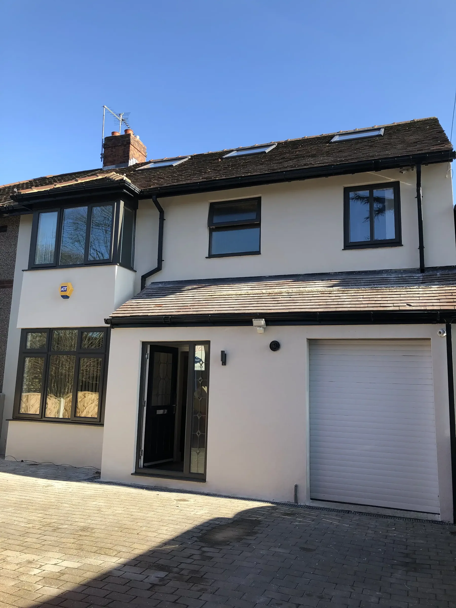
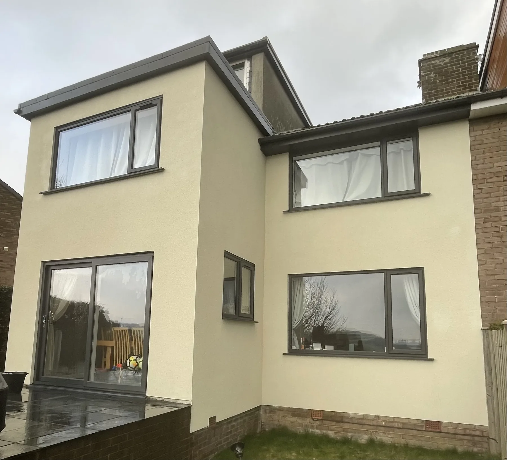
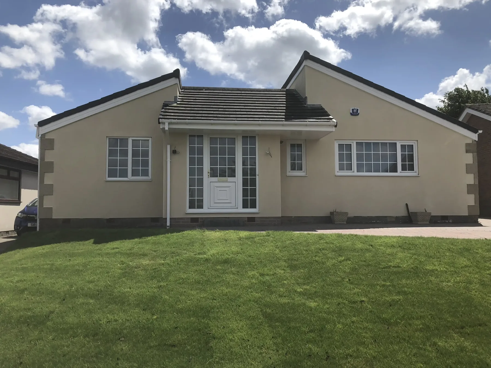
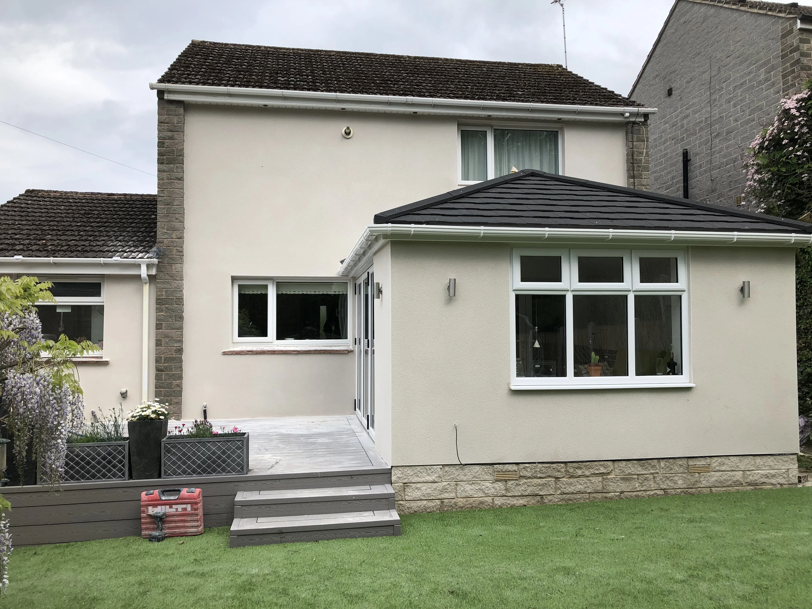
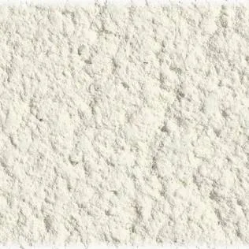
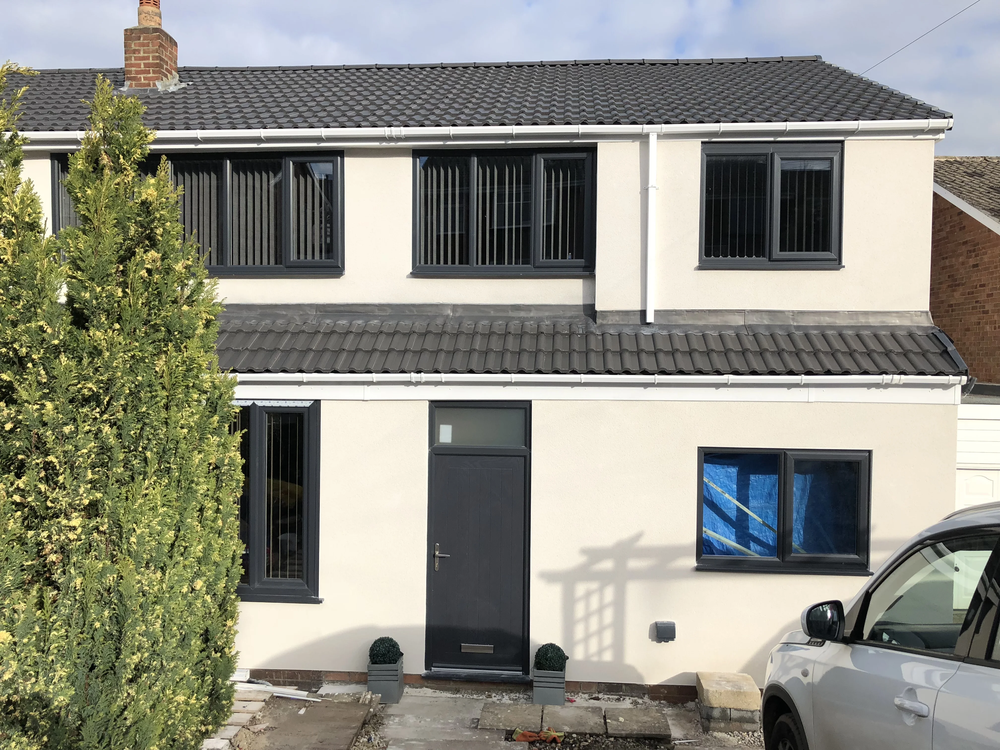

Sheffield · South Yorkshire
Monocouche
Rendering
Sheffield.
Single coat. Stone-like finish. 20-25 year manufacturer warranty. The proven choice for Sheffield homeowners who want quality without overpaying.
Single coat. Stone-like finish. 20-25 year manufacturer warranty. The proven choice for Sheffield homeowners who want quality without overpaying.

Dore, S17 Sheffield — monocouche scraped render completed by P&R Solutions
Monocouche is the proven single-coat render system — used across Europe for decades. Here's why it remains the go-to choice for Sheffield homeowners.
Get a Quote ↗Traditional render systems require multiple coats applied over several days. Monocouche does it in one — reducing time on scaffold, disruption to your household, and labour costs. Most Sheffield properties are completed in 2–4 days from scaffold erection to finished render.
The scraped finish of monocouche creates a natural, stone-like texture that suits Sheffield's traditional terraces, period properties, and modern new builds alike. It's a timeless aesthetic — far more considered than flat painted render and far better suited to the local built environment.
The colour is mixed throughout the render material before it's applied — not painted on afterwards. The result runs through the full 12–15mm depth. UV-stable pigments ensure it won't chalk, fade, or peel. No repainting cycle. No flaking masonry paint to deal with every few years.
Monocouche is highly vapour-permeable (Class 1 breathability). Moisture vapour can escape from within the wall while the render resists liquid water from outside. This prevents trapped damp, cold spots, and mould growth — especially important for Sheffield's solid-wall Victorian and Edwardian properties.
Every monocouche system carries a full 20-25 year manufacturer product warranty plus our own 5-year workmanship guarantee. Zero deposit — you pay nothing until the work is 100% complete and you've inspected it yourself.

1One coat, 12–15mm thick, combining base coat strength with a stone-like finish coat — applied in a single visit. That's the monocouche system. Faster to install, less disruption, and 20-25 years of weatherproof performance.

Fulwood, S10
Detached property
Full monocouche render to all elevations. K Rend scraped finish in Limestone. Complete substrate preparation and primer before application.
Request Similar ↗
Firth Park, S5
Detached property
Baumit monocouche system — excellent breathability for older construction. Scraped texture throughout, integral Stone colour to complement the surrounding area.
Request Similar ↗
Worrall, S35
Victorian terraced property
Monocouche on a period Victorian terrace. The scraped texture suits the character of the property — breathable render ideal for older solid-wall construction.
Request Similar ↗Dore, S17
Detached property
Full monocouche render to a detached property in Dore. K Rend scraped finish in Limestone — through-colour system means no painting, ever.
Request Similar ↗
Dronfield, S18
Detached property
Weber monocouche to a detached property in Dronfield. Fine-scraped texture in Natural Stone — complements the property's original character and ties in with the local streetscape.
Request Similar ↗
Stocksbridge, S36
Semi-detached property
K Rend monocouche to a semi-detached in Stocksbridge. Scraped finish in Warm Stone — a clean, modern look that dramatically transforms the kerbside appearance.
Request Similar ↗
Fulwood, Sheffield — professional monocouche application. Preparation is everything. A system is only as good as what it's applied to.
A properly installed monocouche system follows 6 stages. Each one matters — skip any and the render will fail long before the warranty expires.
Book Survey ↗The existing surface is cleaned, all loose or hollow sections removed, and cracks or damage repaired. Substrate moisture is tested to ensure conditions are right. This is where the long-term performance of the system is won or lost — we never cut corners on prep.
A professional primer is applied to ensure optimal adhesion and even out suction variations across the substrate. The right primer for the right substrate — brick, blockwork, or existing render — is critical for long-term performance and is never skipped.
Monocouche render is applied in a single coat at 12–15mm thickness. Unlike traditional multi-coat systems, this one application combines base coat strength with finish coat aesthetics — reducing time on scaffold without sacrificing performance. Applied to a consistent depth throughout.
Before the render fully sets, the surface is worked to create the desired texture. Scraped (pulled back with a comb) creates the classic stone-like finish. Roughcast gives a heavier, more rustic effect. The scraped finish is by far the most popular choice across Sheffield's housing stock.
Colour is mixed throughout the render material before application — running through the full 12–15mm depth. UV-stable pigments ensure consistent colour, fade resistance, and durability for 20+ years. Nothing to peel or repaint because there's no surface coating to fail.
7–14 days for full cure, depending on weather and substrate. During this time the render achieves maximum hardness, adhesion, and weather resistance. The property is protected from rain during curing. Once cured, the system is ready for 20-25 years of performance.

Sandygate, Sheffield
All systems carry 20-25 year product warranties. We'll advise the right one for your property at the free site survey.
We work with four industry-leading monocouche manufacturers. Each system carries a 20-25 year product warranty. We'll recommend the right one at your free site survey.
Discuss Options ↗A well-proven monocouche system with excellent coverage, consistent colour batches and strong adhesion on a wide range of substrates. A reliable choice for Sheffield's varied housing stock — from Victorian brick to modern blockwork.
UK market leader in monocouche systems. Proven track record, wide colour range, and excellent performance in the UK climate. Our primary recommendation — reliable, consistent, and backed by strong manufacturer support.
Saint-Gobain Weber — one of Europe's largest building materials companies. Excellent monocouche range with outstanding durability and a wide colour palette. Backed by the resources and quality assurance of a global manufacturer.
German engineering excellence with outstanding vapour permeability — ideal for older masonry and listed properties where breathability is critical. Premium option for period properties where performance cannot be compromised.
Johnstones Stormshield — a trusted British brand delivering reliable weather protection. Solid performance at a competitive price point, with good durability and a straightforward application process.
Estimates based on standard spec. Your quote will be fully itemised after a free site survey.
0% deposit required. You pay only when the work is 100% complete and you've inspected it.
Prices include scaffold, preparation, primer and full system. No hidden costs.
Not sure whether to go monocouche or silicone? Here's an honest comparison — we'll advise the right system at the site survey.
Get Itemised Quote ↗Proven, cost-effective single-coat system with a natural stone-like finish. The practical choice for new builds, extensions, and renovations.
✓Single coat — faster application, less disruption
✓Through-coloured stone-like finish
✓More affordable than full silicone
✗Less flexible than silicone — occasional hairline cracks possible
The premium option — self-cleaning, polymer-flexible and hydrophobic. Worth the extra cost if minimal maintenance over 25+ years is the priority.
✓Self-cleaning hydrophobic surface
✓More flexible — crack-resistant
✗Higher upfront cost than monocouche
Traditional multi-layer acrylic system. Lower initial cost but shorter lifespan — will need redoing in under 12 years.
✓Lower upfront cost
✗Shorter lifespan — higher long-term cost
✗Multiple coats — longer to apply
All colours are through-mixed — integral throughout the full 12-15mm depth. UV-stable, won't peel or chip. Physical samples provided at your free site survey.

Scraped Texture — The Standard Finish
The most popular monocouche finish in Sheffield. Pulled back to create a natural stone-like surface that suits period and modern properties alike.
Off White
Light Grey
Warm Grey
Taupe
Stone Brown
Dark Brown
Terracotta
Burnt Red
Sage Green
Dark Green
Slate Blue
Everything Sheffield homeowners ask us about monocouche rendering. Click any question for the full answer.
Call 07595 399525 ↗Monocouche (French for 'one coat') is a cement-based render that combines base coat and finish in a single 12–15mm application. It's through-coloured — the colour runs throughout the full thickness of the material, not painted on. The result is a durable, stone-like finish that doesn't peel, chip, or need repainting. It's a well-proven system that's been used across Europe for decades and is particularly popular across South Yorkshire for new builds, extensions, and renovation projects.
For a mid-terrace house in Sheffield, monocouche rendering typically costs £3,500–£5,000. A 3-bed semi runs £5,000–£7,500 and a detached property £7,500–£11,000+. Prices include scaffold, full substrate preparation, primer and the complete monocouche system. We provide a fully itemised quote after a free site survey — no deposit required, and you pay only when the work is 100% complete.
A professionally installed monocouche render carries a 20-25 year manufacturer product warranty plus our own 5-year workmanship guarantee. On a properly prepared substrate with correct application, monocouche consistently performs for 25+ years in UK conditions. Properties we rendered over a decade ago still look sharp — the integral colour doesn't fade or chalk.
Both are excellent — the right choice depends on your priorities. Silicone is the premium option: hydrophobic (self-cleaning), more flexible (crack-resistant), and carries a 25-year warranty. Monocouche is a proven, cost-effective alternative with a natural stone-like finish and a 20-25 year lifespan. It's the better choice for new builds, extensions, and projects where budget matters without sacrificing quality. We'll give you an honest recommendation at your free site survey.
It depends on the condition of the pebbledash. If it's sound, well-bonded, and not hollow, monocouche can be applied over the top with the right primer. Where sections are loose, hollow or failing, we remove those areas back to the masonry before applying. We always carry out a full substrate assessment at the free site survey and explain exactly what's involved before work begins — no surprises.
Hairline shrinkage cracks can occasionally occur in monocouche — it's a cement-based product and less flexible than silicone. Correct preparation (right primers, correct mix, proper curing conditions) minimises this risk significantly. For properties on particularly movement-prone substrates, we may recommend a silicone system instead. We'll always be honest about the best system for your specific property at the site survey.
No — and this is one of monocouche's key advantages. The colour is integral throughout the full 12–15mm thickness of the coat, pigmented with UV-stable tints. There is nothing to peel or repaint. Unlike masonry paint which needs redoing every 5–8 years (at a cost of £2,000+ each time), monocouche maintains its colour for 20+ years with no repainting required whatsoever.
A mid-terrace or semi-detached house typically takes 2–4 working days from scaffold erection to finished render. A detached property or one with significant prep work may take 4–6 days. Because monocouche is a single-coat system, it's faster than traditional multi-coat approaches — meaning less time on scaffold and less disruption to you. We'll give you a firm programme at the site survey.
Yes — for most Sheffield homeowners, monocouche is outstanding value over the long term. Consider the alternative: masonry paint costs £2,000–£4,000 and needs redoing every 5–8 years. Over 25 years that's up to £20,000 in repainting costs alone. A monocouche render (£3,500–£11,000 depending on property size) requires zero repainting for 20-25 years. The integral colour doesn't fade, peel, or chalk. Add improved weatherproofing and kerb appeal — the maths is straightforward.
Every monocouche system we install carries the manufacturer's product warranty (20-25 years depending on brand — Ecorend, K Rend, Weber or Baumit) plus our own 5-year workmanship guarantee. You pay zero deposit — nothing until the work is 100% complete and you've inspected it to your satisfaction. All quotes are fully itemised with no hidden costs.

Free site survey. Fully itemised quote. Zero deposit. Sheffield's trusted monocouche rendering specialists.